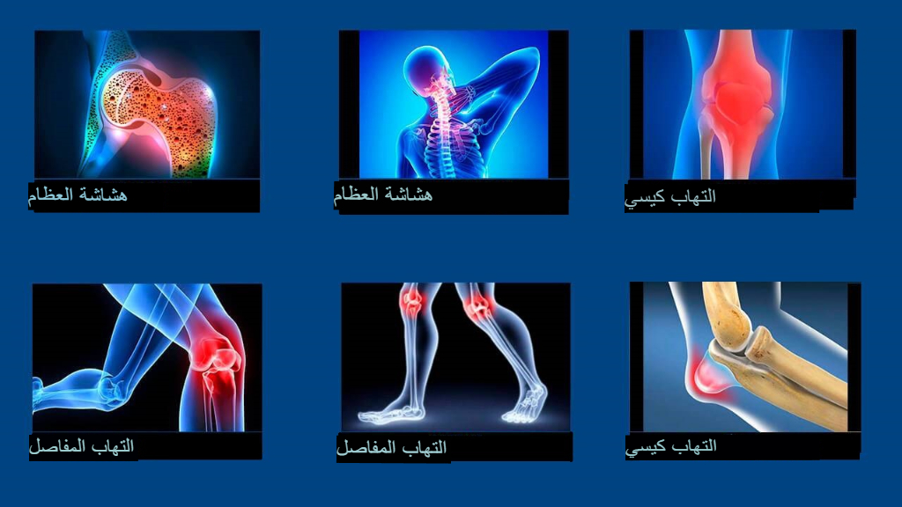
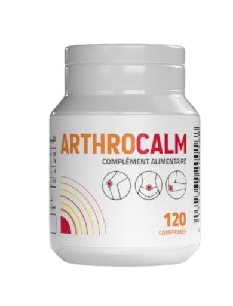

أخبار الصحة
"الأساليب الجزائرية للتخلص من مشاكل المفاصل تسبب الصدمة ليس إلا". مقابلة رائعة مع طبيب الروماتيزم الروسي الشهير الدكتور ريابوف كونستانتين؛ مدير مركز برلين الشهير للروماتيزم والأعصاب هناك سبب واحد فقط لوجود مشاكل المفاصل، ولكن المختصين يتجاهلونه تمامًا.
date
الدكتور ريابوف كونستانتين: "في دولة الجزائر، لا تزال مشاكل المفاصل يتم التخلص منها بطرق غير فعالة عفا عليها الزمن، والتي واجب تناولها بشكل مستمر على مدى الحياة. بينما في روسيا، يتم التخلص من مشاكل المفاصل بشكل بسيط خلال أسبوع وكأنها الزكام".
في العام الجاري، زار ريابوف كونستانتين دولة الجزائر لدراسة تجربة زملائه الجزائريين. وما شاهده في دولة الجزائر، حسب كلامه، تعجز الكلمات عن وصفه. في بلدنا، وفقا لريابوف، أساليب التخلص من الروماتيزم تعود لمنتصف القرن الماضي.
السيد ريابوف كونستانتين شكرا لموافقتك على المقابلة! لقد قلت مؤخرًا إن ما رأيته في الجزائر صدمك. هل يمكنك التعليق على هذا؟
أريد أن أقول على الفور أن نظرتي جيدة تجاه دولة الجزائر، وتجاه الثقافة الجزائرية و
الجزائريين
نفسهم. لكن حالة الطب لديهم تصدم. مجال الطب لديه بعض المشاكل و لم يتم تطويره على الأقل بـ 30 سنة، وربما ال40 حتى.
على
أي حال، بالنسبة للتخلص من مشاكل و ألام المفاصل والجهاز العضلي الهيكلي. يمكننا القول، إن مثل علم الروماتيزم في دولة
الجزائر
غير موجود أصلًا.
ما يقترحه المختصين للتخلص من مشاكل و ألام المفاصل فقط يخفف من أعراض المشكلة . الألم والالتهاب والوذمة. تخيل
ما يحدث في جسم الإنسان . عندما يستخدم الشخص هذه المواد الكيميائية العديمة الفائدة للتخلص من ألام المفاصل. ولكن بمجرد التوقف عن إستخدام هذه المنتجات الكيميائية . يعود
الألم على الفور. والألم إشارة مهمة لأنه يشير إلى حدوث عملية مدمرة في المفصل. تناول مسكنات الألم بانتظام لن
يساعد
مفاصلك. يتم تسريع عملية التدمير من 5 إلى 7 مرات وتؤدي في النهاية إلى تغييرات لا رجعة فيها
وإعاقة.
العديد من الناس يستخدمون هذه المواد الكيميائية التي تؤدي في النهاية إلى نهاية بائسة مؤلمة ! من الواضح أن عمليات البيع المستمرة والأسعار الباهظة للمستحضرات التي من
شأنها أن تقضي على الأعراض فحسب أمر مربح على نقيض التخلص من المشكلة الصحية او الألم لمرة واحدة وإلى الأبد، والتخلص من المفصل التالف، ولكن
هذا
ليس عدلاً ولا صحيحًا!
ماذا عن التخلص من ألام المفاصل في ألمانيا؟
في ألمانيا نادرًا ما يتم استخدام مسكنات الألم فقط في الحالات القصوى بحذر شديد. لقد أدرك
جميع الأطباء الألمان منذ فترة طويلة أنه من الضروري القضاء ليس فقط على آلام المفاصل، ولكن على وجه التحديد أسباب
هذا الألم. هذا هو المفتاح السهل للتخلص من مشاكل و ألام المفاصل . ما هو السبب الرئيسي لتلف المفاصل؟ هو ترسب الأملاح بسبب
اضطرابات الدورة الدموية في المفاصل والعمود الفقري.
على سبيل المثال اليورات هي عبارة عن أملاح حمضية
اليوريك
وتسبب النقرس. والنباتات العظمية هي الأملاح المتكلسة وهي سبب ل 96% من مشاكل المفاصل والعمود
الفقري الأخرى. جميع أنواع التهاب المفاصل والتهاب المفاصل، وتنخر العظم، وهشاشة العظام، والروماتيزم، وأي فتق. كل
هذه المشاكل لها سبب واحد: رواسب النباتات العظمية.
تبدأ الأملاح، المترسبة على أسطح المفاصل في تدمير
الأنسجة: العظام والغضاريف. في مرحلة النمو، تبدأ بلورات الملح في إصابة الأنسجة العضلية والأوتار والأوعية
الدموية
والشعيرات الدموية، مما يتسبب في حدوث التهاب كبير ووذمة وألم شديد.
من أجل إزالة الأملاح المتراكمة على مر
السنين من المفاصل المتضررة. يحاول الأطباء الألمان أولاً اعادة الدورة الدموية في المفاصل. وهذا بدوره يعيد الدورة
الدموية الطبيعية للسائل الزليلي ويبدأ عملية تحسين و زيادة نسيج المفصل. مفاصل الإنسان متجددة للغاية، فهي قادرة على
التعافي
بسرعة مثل ذيل السحلية. تحتاج فقط إلى مساعدتهم قليلاً في هذا من أجل تحريرهم من الأملاح "الملتصقة" بهم
وستستمر العملية من تلقاء نفسها.
مفاصل الإنسان متجددة للغاية، ويعرفون بشكل مستقل كيفية التعافي، مثل ذيل
في عام 1995، تمكن العلماء السويسريون من الحصول على شكل خاص من شبه فيتامين B، ما يسمى
ألفا-أرثروفيرول. يتم الحصول عليه عن طريق تصنيع المكونات الطبيعية: مستخلص مارال، سم الأفعى، شحم سمك القرش
بالإضافة إلى مجموعة من أكثر من 50 مستخلصًا مختلفًا. مستخرج قرون مارال هي المادة التي تضمن النمو النشط لقرون
الحيوان. أي أن مهمتها الرئيسية هي إنشاء نسيج عظمي جديد. هل يمكنك تخيل القوة البيولوجية لمثل هذه الآلية؟ لا
يوجد
شيء أكثر فعالية في الطبيعة لتنشيط الدورة الدموية في العظام والمفاصل.
هذه المادة قادرة على اختراق جزيئات
الملح وكسرها من الداخل - ونتيجة لذلك، يتم تنظيف أسطح المفاصل، وزيادة تدفق الدم وتدوير السائل الزليلي. إلى
أبد
الآبدين! أو بالأحرى، حتى يتراكم الملح مرة أخرى (لكن هذا سيستغرق عدة عقود). لم تعد بحاجة إلى استخدام الأدوية
بشكل
مستمر لتخفيف الألم والالتهاب. يتعافى الناس على أكمل الوجه!
لقد صدمت عندما رأيت الإحصائيات الطبية
الجزائريين. هل تعلم ما هو السبب الأكثر شيوعًا للإعاقة في الجزائر؟ هو التهاب المفاصل! أبسط حالات التهاب
المفاصل،
التي تعالج في ألمانيا في غضون أسبوعين بعقار رخيص، هي نفسها تؤدي إلى الإعاقة في الجزائر!
تعتبر مشاكل و ألام
المفاصل في الجزائر اليوم مشاكل خفيفة. يشير الألم والالتهاب في المفاصل فقط إلى أنها "ملوثة"
بالأملاح
وقد حان الوقت لتنظيفها. بعد دورة "التنظيف" على مدى شهر، تعود المفاصل إلى وضعها الطبيعي ويمكن نسيان
المشاكل للسنوات العشرة القادمة.
مشاكل المفاصل، التي يحاول أخصائيون عديدون "التخلص منها " بشكل
منفصل، في ألمانيا دمجت منذ فترة طويلة في مشكلة واحدة تحت مسمى "Articulatio de sales" (التكوينات الملحية
للمفاصل). تشمل هذه المشكلة : النقرس، التهاب المفاصل، التهاب المفاصل، الداء العظمي الغضروفي، الروماتيزم، الفتق،
التهاب الغشاء المفصلي إلخ.

وكل هذه المشكلة يمكن التخلص منها بكل بساطة .. عن طريق تنظيف المفاصل.
طريقة آمنة وسريعة
تمامًا، ولا يتطلب حتى رعاية طبية ويتم إجراؤه في المنزل.
كيف يتم "تنظيف" المفاصل في ألمانيا؟
اليوم هناك مستحضرات خاصة مصنعة لتطهير المفاصل من رواسب الملح. تحتوي على مادة
ألفا-أرتروفيرول. على سبيل المثال، أحد أفضل المنتجات المحتوية عليها هو ARTHROCALM. يحتوي هذا المكمل الغذائي على مادة
ألفا-أرتروفيرول في شكل خاص سهل الامتصاص، مما يؤدي إلى زيادة فعاليته.
من المزايا المهمة لـ ARTHROCALM
أنه
يحتوي على مجموعة متكاملة من الفيتامينات المفصلية الجهازية، والعناصر الكلية والصغرى المصممة لتحسين أداء أنسجة
المفاصل. أي أن لها تأثير شفاء شامل على أنسجة العظام والغضاريف، والسائل الزليلي، وألياف العضلات، وعلى أنسجة
الأربطة والأوتار. الطيف الكامل المحتمل للتأثيرات المعقدة هو مسحوق رائع. يحتوي على أكثر من 50 مكونًا طبيعيًا.
يعيد الدورة الدموية في المفاصل بسهولة وسرعة.
ARTHROCALM، على حد علمنا، لا يباع في الصيدليات الجزائرية أليس كذلك؟
لا يتم بيعه في الصيدليات للأسف و لكن يتم بيعه مباشر عبر الانترنت فقط
في الوقت نفسه، ليس هناك شك في أن العديد من المختصين يعرفون عن المنتج او على
الأقل أولئك الذين يهتمون بأساليب التخلص من الروماتزم الحديثة يعلمون عن ARTHROCALM وقدراته المتقدمة.
على حد علمي، الشركة المصنعة ARTHROCALM الأن موجودة في السوق الجزائري.
و هم يبيعون المنتج الأن بتخفيضات كبيرة جداً
ما هي نصيحتكم للأشخاص الذين يعانون من آلام المفاصل والمقيمين في الجزائر؟
للأشخاص العاديون، وخاصة الأشخاص الذين تزيد أعمارهم عن 40 عامًا، لأنهم أكثر عرضة
للإصابة بماكل المفاصل و ألام المفاصل و الروماتزم . الخطأ ليس خطأهم، إنها الطريقة التي يستخدمها العديد من الناس للتخلص من المشكال البروماتزم لا
غير.
لكن لحسن الحظ، هناك حل. لقد اتفقنا مع المركز الجزائريين لمشاكل الروماتيزم حول إمكانية بيع هذا
المكمل الغذائي لجميع سكان الجزائر الذين يعانون من مشاكل في المفاصل. تم إنشاء موقع ويب رسمي خاص، يمكن من خلاله لأي
مقيم
في الجزائريين طلب ARTHROCALM بسعر زهيد للغاية!
بالفعل عدة آلاف من المقيمين في الجزائر قد طلبوا
وتلقوا
ARTHROCALM. طلبنا منهم تقييم مدى نجاح المكمل الغذائي في مساعدتهم من 1 إلى 10. حتى الآن شارك أكثر من 5000 شخص في
الاستطلاع ومتوسط تقييم المكمل الغذائي هو 9.95 من أصل 10.
ما هي مدة التوزيع التفضيلي لهذا المكمل الغذائي
المذهل؟
حتى تنتهي الدفعة المخصصة. لكني أريد أن أخبركم الان أنه لم يتبقى سوى القليل منه. الطلب عليه
يتزايد ويتزايد. الناس يتداولون الاحاديث بشأنه إلى بعضهم البعض وينصحون أصدقاءهم ويطلبونه لأقاربهم. حتى أننا
لم
نتوقع أن تنتشر المعلومات حول ARTHROCALM بهذه السرعة في جميع أنحاء الجزائر.
حتى ينتهي ARTHROCALM،
أنصح بأن يتقدم جميع الأشخاص الذين يعانون من مشاكل المفاصل للحصول على المنتج بتخفيض عند شراء المكمل الغذائي ARTHROCALM التفضيليةعن طريق ملئ نموذج الطلب الرسمي بالأسفل و الحصول على المنتج حتى باب المنزل و لا تنسوا ان الدفع عند الإستلام .

أسرع واطلب قبل أن يتم تمرير الخصم إلى القارئ التالي، عرضك لمرة واحدة سينتهي قريبًا:
5999 DZD
عند شرائك دورة ARTHROCALM
تعليقات وآراء
شكرا لكم، المقال مفيد جدا! لفد قمت بطلب ARTHROCALM. قال المستشار أن المكمل الغذائي
لازال
متوفرا، لكنه ينتهي بسرعة. من الجبد أنني قرأت هذا المقال وعرفت بشأن المكمل الغذائي .
أنا واحد من أولئك الذين تمكنوا بالفعل من تجربة المكمل الغذائي ARTHROCALM. إنه حقًا
الأفضل.
أنا أعاني من مشكلة التهاب المفاصل منذ فترة طويلة للغاية، هذا المشكلة يعذبني منذ 7 سنوات. وقد تقبلت فكرة
تناول
حبوب وحقن حتى نهاية حياتي، ولكن في نهاية المطاف، بعد إتمام الدورة العلاجية مع المكمل الغذائي ARTHROCALM،
الألم
اختفى. اختفى تمامًا. أوصي الجميع بهذا المكمل الغذائي إنه حقاً سيساعدكم!
عمري 63 عاما. تؤلمني الركبتين منذ 53 عاما. وفي الآونة الأخيرة، بات الألم لا يطاق
تمامًا. راجعت طبيبي (صديق الطفولة) وهو أخبرني عن هذه الدورة ووصفني هذا المكمل الغذائي قبل 3 أشهر.
الآن
أقفز مثل الكنغر... المكمل الغذائي نار!
طلبت المكمل الغذائي . أبلغوني أنه في غضون 5 أيام يمكنني استلامه عبر البريد. أتمنى من
استلامه
في الوقت المحدد.
لقد اشتريته لأبي و ساعده كثيراً شكراً لكم جميعاً على هذا المنتج الرائع و لتوفيرة في الجزائر
في رأيي، الهدف الرئيسي لدى الأطباء هو سرقة الأموال منا قدر الإمكان ولا يهتمون
لأي
شيء آخر بتاتًا. أخضع كل نصف سنة لجودة العلاج بالحقن. وهذا العام، في الخريف، وصفوا لي عدد لا يفسر من
الحقن
أخشيت من تناولها. والطبيبة لم تسألني حتى عن المشاكل الصحية الأخرى التي أعاني منها وكيف ستؤثر تلك
الأدوية
على جسمي. اللامبالاة ووصف مواد كيميائية معينة يتلقون نسبة منها من الشركات. ربما في أماكن أخرى الأمور لا تجري
على
هذا السيناريو، ولكنني غير متأكدة. هذا هو حال الطب لدينا. أما بخصوص المكمل الغذائي الألماني بشروط ميسرة، فهو
خبر
سار بالتأكيد!
لدي أيضا خبرة في إستخدام المكمل الغذائي ARTHROCALM وخبرتي كذلك إيجابية. كنت أستخدم
مسكنات
الألم بالحقن باستمرار، ولكن بعد ARTHROCALM أشعر وكأنني عصفورة تحلق السماء!
المكمل الغذائي جيد حقا. تعالجت به في الصيف الماضي (أحضره ابني من برلين). وقد تخلصت من
مشكلة
النقرس بفضله! وحتى الآن لا أعراض المشكلة ادي. أنا مندهش حقا. أشعر بالارتياح. أوصي الجميع بهذا
المكمل الغذائي .
بينما كنت أقرأ في منتديات التعليقات عن ARTHROCALM المكمل الغذائي تقريبًا انتهى! الحمد
لله
تمكنت من طلبه. وشروط ميسرة أوي.
علمت بشأن ARTHROCALM من أحد المنتديات للمعانين من آلام المفاصل. والكثير من
التعليقات كانت إيجابية بشأنه. قررت أن أطلبه أنا أيضًا. بتُّ أستخدمه لـ 3 أيام فقط، وبدأت ألاحظ تحسينات
في
كل شيء. زال الألم تمامًا، وصوت الطقطقة خف بشكل ملحوظ، ولا تزال هناك وذمة صغيرة، لكنها أفضل بكثير مما
كانت
عليه. عموما سأفيدكم بين الحين والآخر ولكني راضي تماما بالبداية
أعجبني أيضا هذا المكمل الغذائي . في البداية كنت أتناول
ولكن فجأة توقف مفعول تلك الأدوية. بعدها راجعت الطبيب، و نصحني بتجربة المكمل الغذائي
ARTHROCALM الجديد (الطبيب
كان
شابًا، قد يكون ما تزال نواياه طيبة غير متيخة بفكرة جني المال من المشكلة ى!). ساعدني ARTHROCALM من
المرة
الأولى: زال الألم على الفور تقريبًا، لكنني بدأت في تناوله في شكل دورة علاجية، كما نصحني الطبيب. بعد 3
أسابيع، نسيت كلمة الألم على الإطلاق. أشعر يشكل رائع، وكأنني عدت شابة!
شكرا. طلبت المكمل الغذائي لي ولزوجي. سألت المستشار متى سيتوافر المكمل الغذائي في الصيدليات. -
قال
إنه لا يعلم. وقد تكون هذه الطريقة الوحيدة لتجربة هذا المكمل الغذائي
شكرا
أسرع واطلب قبل أن يصل الخصم إلى القارئ التالي، عرضك لمرة واحدة سينتهي قريبًا:
7999 DZD